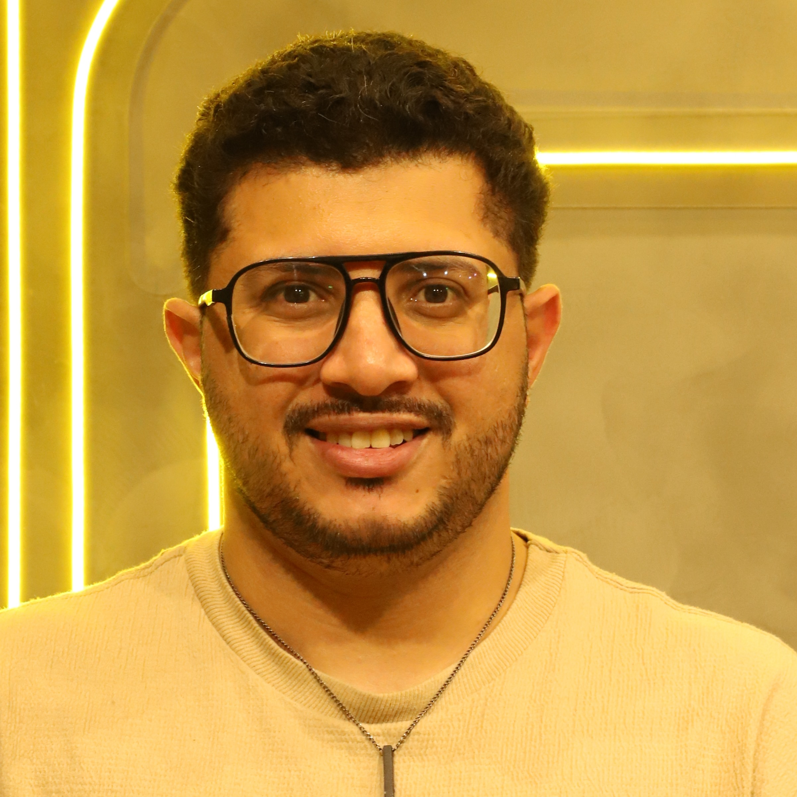

Palestra gratuita
do papel operacional ao papel estratégico — Prof. Dr. Gilberto Shinyashiki
Essa palestra faz parte do conteúdo preparatório do MBA USP em Gestão Estratégica de Pessoas e Organizações Sustentáveis — um convite para você experimentar, antes de tudo, o tipo de reflexão que vai encontrar ao longo do curso.

Tenho condições especiais separadas pra você. Me chama e te conto os detalhes.
Falar com o Johnatan